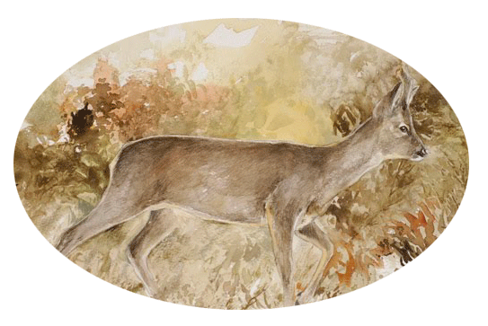
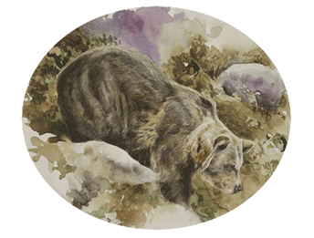

Cuando canta el gallo negro
es que ya se acaba el día.
Si cantara el gallo rojo
otro gallo cantaría.
Ay, si es que yo miento,
que el cantar que yo canto
lo borre el viento.
Ay, qué desencanto
si me borrara el viento
lo que yo canto.
Se encontraron en la arena
los dos gallos frente a frente.
El gallo negro era grande
pero el rojo era valiente.
Se miraron cara a cara
y atacó el negro primero.
El gallo rojo es valiente
pero el negro es traicionero.
Gallo negro, gallo negro,
gallo negro, te lo advierto:
no se rinde un gallo rojo
mas que cuando está muerto.
El corzu (corzo)

El corzo (Capreolus capreolus) es una especie de mamífero artiodáctilo de la familia Cervidae.
Es el cérvido más pequeño de Eurasia. Su área de distribución se extiende desde Europa occidental,
donde sólo está ausente en Irlanda, Grecia y el norte de Escandinavia, hasta el norte de China.
Su dieta alimentaria consiste en el consumo de hojas de arbustos y árboles bajos,
así como bayas y brotes tiernos. Es un animal más ramoneador que de pastos,
aun cuando se adapta fácilmente a esta dieta donde falta la masa arbustiva.
En estado adulto el corzo tiene una altura en la cruz de unos 75 centímetros como máximo
y un peso de entre 20 y 30 kilos.
Los machos presentan cuernas pequeñas, de tres puntas, que mudan cada año a principios del invierno
y se han terminado de desarrollar ya cuando comienza la primavera.
Las poblaciones desplazadas desde centro y norte de Europa para repoblación cinegética son de mayor tamaño
que las razas del sur de Europa.
El pelaje es pardo-rojizo en ambos sexos durante el verano, volviéndose grisáceo en invierno,
al tiempo que aparece una mancha blanca sobre la grupa. El vientre es de color más claro que la espalda.
Los animales de origen meridional son más oscuros, teniendo un tono castaño achocolatado.
L'osu pardu (el oso pardu)

Güei l'osu pardu ye'l carnívoru más grande de la fauna asturiana llegando a algamar más d'un metru d'altor.
El cuerpu ye macizu, de pates curties, oreyes pequeñes y nun tien rau. El color del pelo ta ente negro y pardo.
Los sentíos que tien más desarrollaos son l'oyíu y l'olfatu. Pel iviernu busquen un sitiu afayadizu ya ivernen los meses más fríos.
L'osu pardu n'Asturies asítiase anguaño na fastera suroccidental, nos conceyos d'Ibias, Ayande, Degaña, Cangas del Narcea, Tinéu, Miranda, Salas, Somiedu, Grau, Tameza, Teberga, Proaza, Santu Adrianu, Quirós y Llena.
Rexistrándose tamién la so presencia nos conceyos orientales de Casu, Ponga y Amieva.